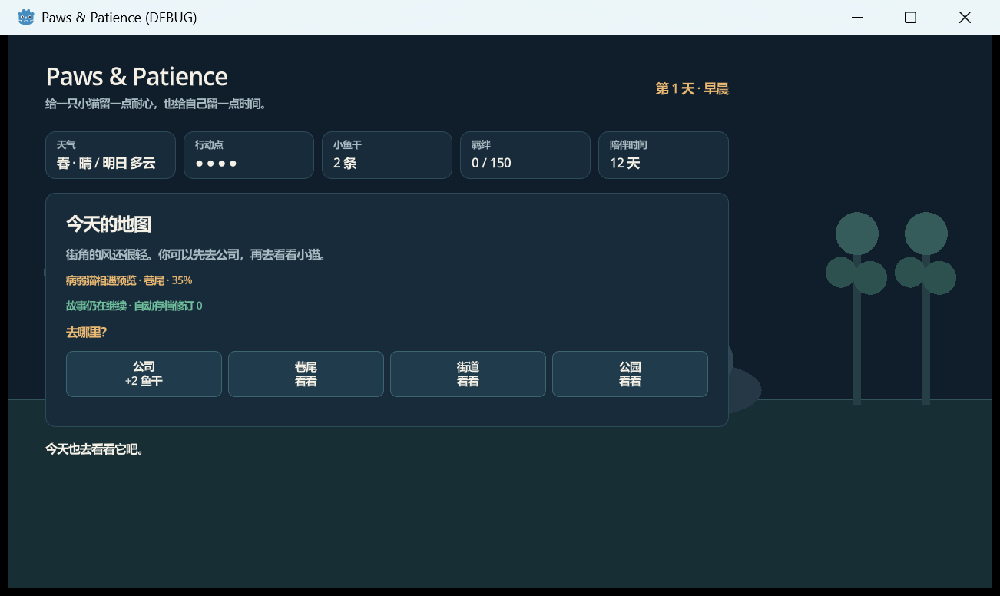

基础日循环
地图选择、4 点行动点、公司获得小鱼干、摸摸与喂食、羁绊反馈、行动耗尽后的次日过渡。
当前成果

交付状态
已具备完整日循环、猫咪互动、天气季节、庇护所、相遇概率、不可逆存档、寿命与双结局。当前适合直接体验和人工评价，不代表完整 GDD 内容已经制作完毕。
开发路径
Completed
地图选择、4 点行动点、公司获得小鱼干、摸摸与喂食、羁绊反馈、行动耗尽后的次日过渡。
病弱猫的摸摸/喂食分支、不同台词、情绪状态和即时反应，互动不再只是数值变化。
当前天气、次日预告、四季状态，以及暴雨和雪天将每日行动点降为 3 点。
纸箱、厚外套、旧毛衣、废弃轮胎四种选择，搭建会消耗行动点并增加羁绊。
猫类型、季节、天气、地点、羁绊和庇护所共同修正相遇概率，并在地图中可见。
版本化单槽自动存档、损坏保护、独立评估存档、12 天原型寿命、150 羁绊回家结局与告别结局。
复用 newPaws 的地图背景和病弱猫图片，完成像素采样、DPI 响应式布局和中文界面修复。
三只猫的完整个人剧情、疏远衰减、牵挂奇迹、往生回响、长期数值平衡和正式美术资源。
Evidence
最终批次：runtime-009-final-recheck · Godot 4.7.stable
确认不可逆存档、评估隔离、寿命、双结局及 Slice 001-005 回归证据可信。
Relay usage
| 来源 | 调用 | Input | Output | Cache read | 已确认成本 |
|---|---|---|---|---|---|
| Claude 汇总 | 10 | 108,780 | 24,191 | 686,780 | ≥ $2.0332385 |
| Codex 可见窗口 | 17 | 2,936,716 | 7,317 | 2,888,448 | $0.571522 |
| 跨窗口下界 | — | — | — | — | ≥ $2.6047605 |
不包含 connectivity hello 的控制台成本，也不推测超时调用是否计费。Token 节省率等待人工基线。
EDD · Human score
填写下面三项的“评分、评价、下次迭代”。输入会自动保存在当前浏览器；填写完后点击右上角导出，把生成的 paws-patience-human-review.json 留在工作区或发回给我，我再同步到评估报告。
Workspace
paws_patience/打开 project.godot，主场景为 main.tscn。
paws_patience/main.gdUI、玩法系统、存档、结局和 KECO_EVAL。
docs/development-index.md可读名称、Keco ID 与本地文件对应关系。
docs/keco-godot-slices/v1/paws-patience-20260825-roadmap/roadmap.md七个 Slice 的完成状态和最终恢复点。
docs/keco-godot-slices/v1/slice-007-visual-assets/eval-report.json最新运行证据、视觉检查结果和三项 EDD 人工评分空位。
progress/v1/paws-patience-20260825-1618.jsonl按北京时间记录工具、参数、目的和结果。
result/v1/paws-patience-20260825-1618.json当前快照、成本下界和三项人工评分空位。